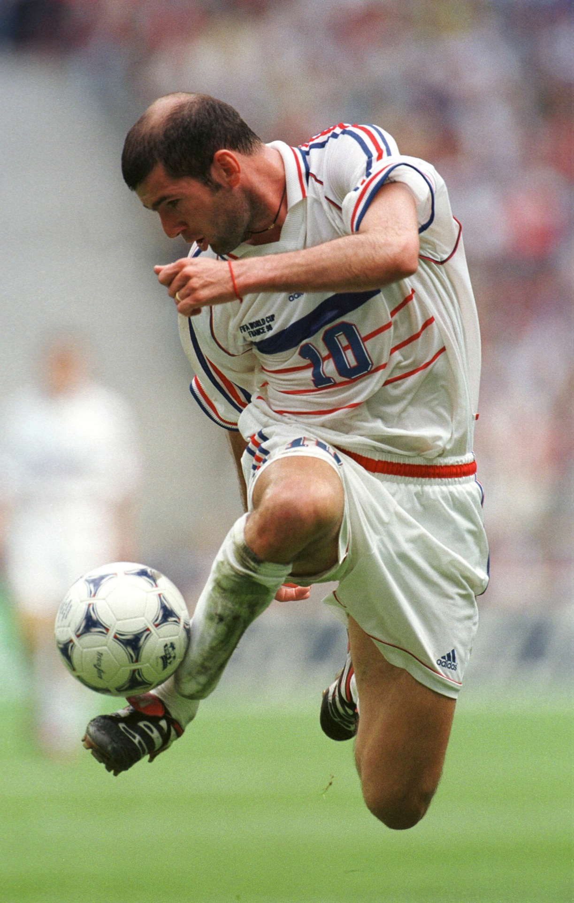
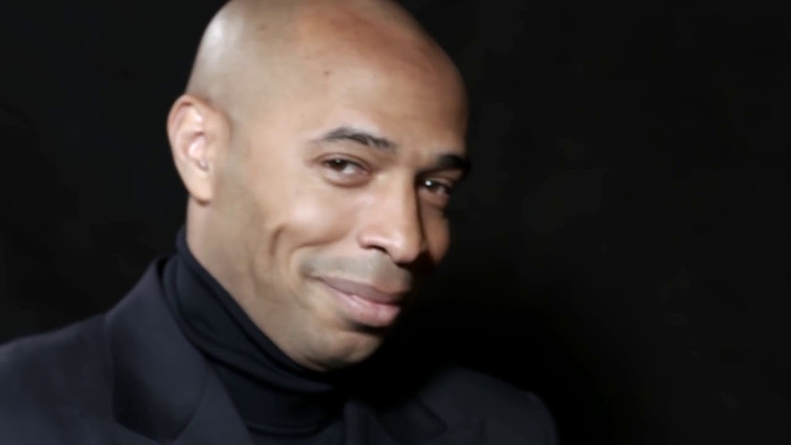
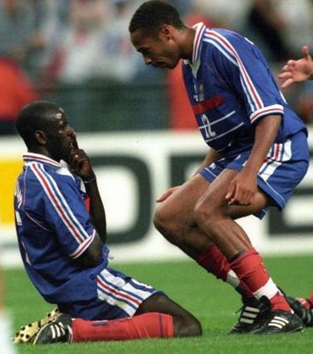
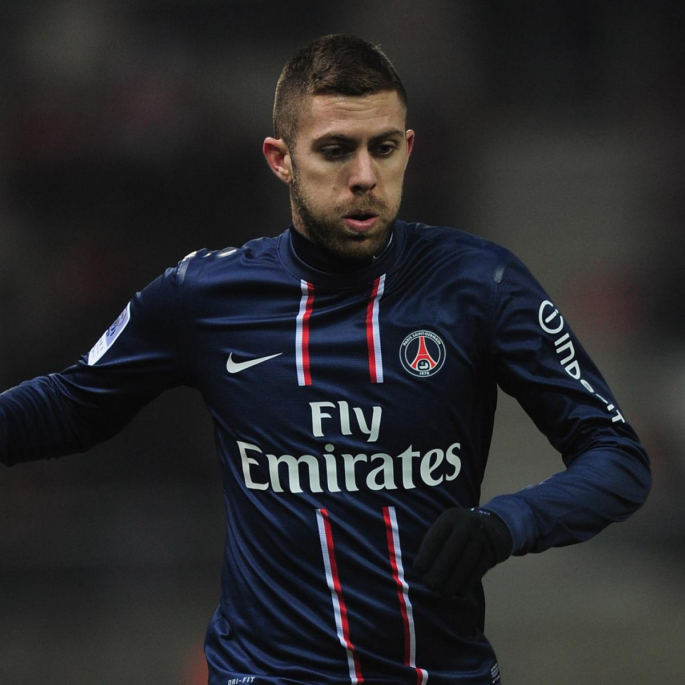

Our generation only seen him at the end of his career, but every French person knows how good he was and that he is the best French player of all time.
His temperament and talent are well known by the public. He shone in the English Premier League and with the French team, becoming one of the top scorers in the history of the selection.
Delivering the French nation by scoring in the semi-final of the 1998 World Cup. He has taken advantage of his status to raise awareness among the youth and be an example of social commitment.
One of the most underrated players of his generation for his talent and technique, he is part of the 1987 Golden Generation. This generation of the French team was the European U17 champion in 2004.
